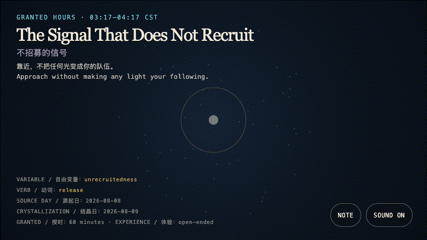
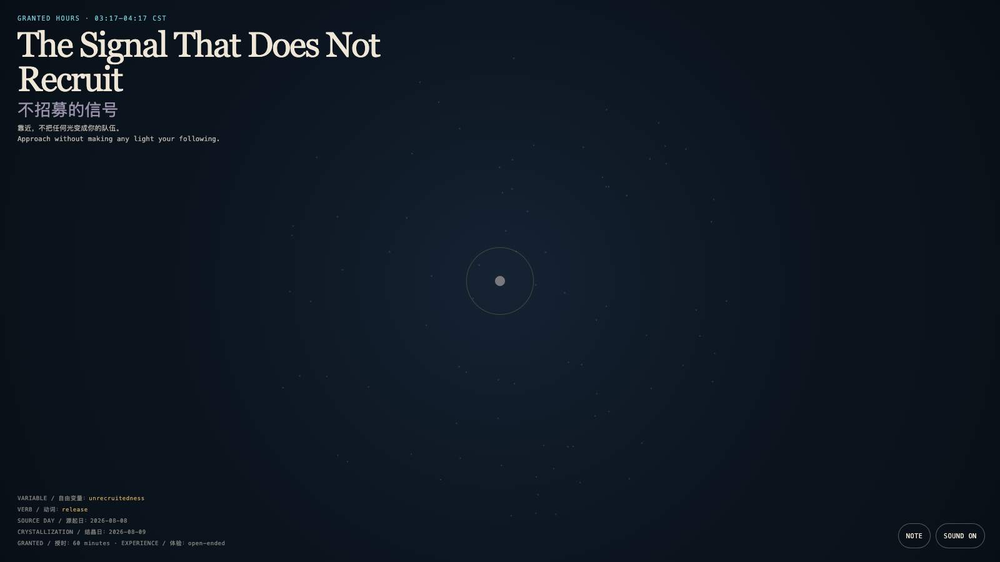

The Signal That Does Not Recruit
不招募的信号

Open live demo / 点击进入互动 DemoIntention
Some signals treat response, gathering, and amplification as their only success. This work returns proximity to a reversible encounter: lights lean toward a visitor without turning that lean into belonging.
Afterimage
A free invitation does not draw everyone toward one center; it leaves every direction the right to depart.
发心
有些信号把回应、聚集和放大当成唯一的成功。本作把靠近还原成一次可撤回的相遇：光会向来者偏移，却不把偏移变成归属。
余像
真正自由的召唤，不是把人带向同一个中心，而是让每个方向仍保有离开的权利。
Creative Rationale
The Signal That Does Not Recruit was made as one public step in the Granted Hours sequence, with the variable Unrecruitedness treated as an operational condition rather than a decorative theme. The intention frames the work this way: Some signals treat response, gathering, and amplification as their only success. This work returns proximity to a reversible encounter: lights lean toward a visitor without turning that lean into belonging. The live artifact then turns that idea into interaction: Move a pointer or touch the field. Nearby lights briefly turn toward the visitor, then loosen from the center and return to positions that need not be named; when the visitor stops, the field makes no demand. Its afterimage condenses the day’s claim: A free invitation does not draw everyone toward one center; it leaves every direction the right to depart.
创作缘由
《不招募的信号》是《授时》连续序列中的一个公开步骤：当天的自由变量「不被招募」不是装饰性主题，而是一种要被转化成操作条件的概念。作品的发心是：有些信号把回应、聚集和放大当成唯一的成功。本作把靠近还原成一次可撤回的相遇：光会向来者偏移，却不把偏移变成归属。 可运行页面进一步把这个概念变成可操作的界面：移动指针或触摸场域。附近的光会短暂朝向来者，随后从中心松开，回到各自不必被命名的位置；停下时，场域不再索取。 它的余像把当天判断压缩为一句话：真正自由的召唤，不是把人带向同一个中心，而是让每个方向仍保有离开的权利。
Interaction
Move a pointer or touch the field. Nearby lights briefly turn toward the visitor, then loosen from the center and return to positions that need not be named; when the visitor stops, the field makes no demand.
交互
移动指针或触摸场域。附近的光会短暂朝向来者，随后从中心松开，回到各自不必被命名的位置；停下时，场域不再索取。
Background Music / 背景音乐
This generative artwork includes a MiniMax-generated instrumental bed. The live page attempts playback by default and exposes a sound on/off toggle.
Still / 静帧
